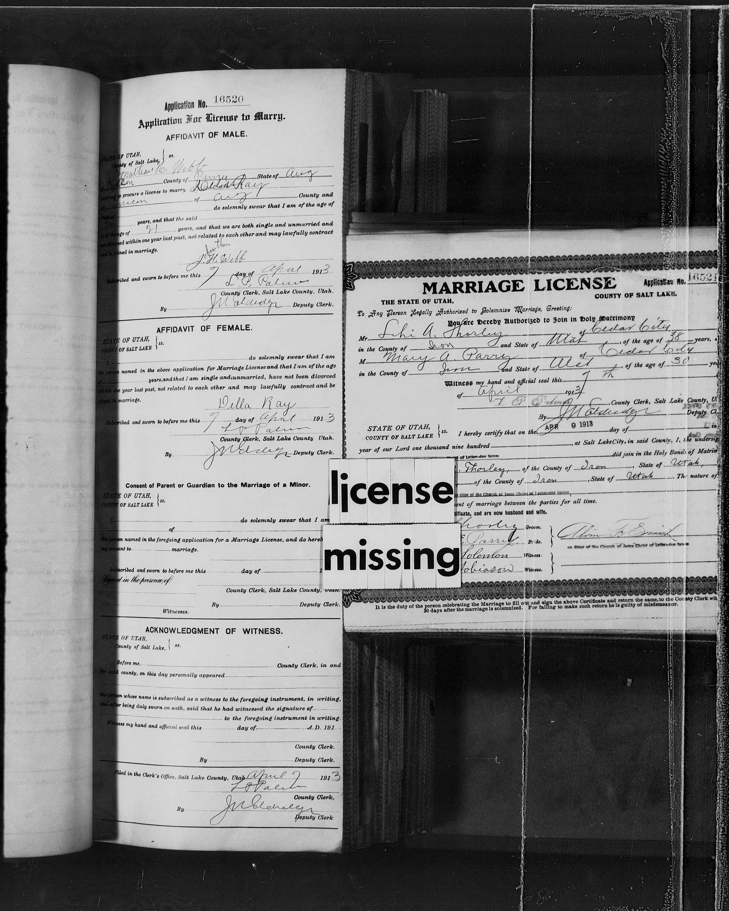

Application No. 16520 Application For License to Marry. AFFIDAVIT OF MALE. STATE OF UTAH, } ss. County of Salt Lake, } I, Jonathan H. Webb [given-name spelling uncertain in entry] of [illegible] County of [illegible] State of Ariz [illegible] to procure a license to marry Della Ray of [illegible] of Ariz County and [illegible] do solemnly swear that I am of the age of [illegible] years, and that the said [blank] is of the age of 21 years, and that we are both single and unmarried and [illegible] divorced within one year last past, not related to each other and may lawfully contract [illegible] be joined in marriage. Jonathan [written above signature] J. H. Webb [signature] Subscribed and sworn to before me this 7 day of April 1913 L. P. Palmer [signature reading uncertain] County Clerk, Salt Lake County, Utah. By J. M. [illegible] Deputy Clerk. AFFIDAVIT OF FEMALE. STATE OF UTAH, } ss. COUNTY OF SALT LAKE } I, [blank] do solemnly swear that I am the person named in the above application for Marriage License and that I am of the age of [blank] years, and that I am single and unmarried, have not been divorced within one year last past, not related to each other and may lawfully contract and be joined in marriage. Della Ray [signature] Subscribed and sworn to before me this 7 day of April 1913 L. P. Palmer [signature reading uncertain] County Clerk, Salt Lake County, Utah. By J. M. [illegible] Deputy Clerk. Consent of Parent or Guardian to the Marriage of a Minor. STATE OF UTAH, } ss. COUNTY OF SALT LAKE } I, [blank] do solemnly swear that I am [blank] of [blank] the person named in the foregoing application for a Marriage License, and do hereby give my consent to [blank] marriage. [blank signature line] Subscribed and sworn to before me this [blank] day of [blank] [illegible/covered printed year] Signed in the presence of [blank signature line] County Clerk, Salt Lake County, Utah. [blank witness line] By [blank] Deputy Clerk. Witnesses. ACKNOWLEDGMENT OF WITNESS. STATE OF UTAH, } ss. County of Salt Lake, } Before me, [blank] County Clerk, in and for said county, on this day personally appeared [blank] [blank continuation line] the person whose name is subscribed as a witness to the foregoing instrument, in writing, who after being duly sworn on oath, said that he had witnessed the signature of [blank] [blank] to the foregoing instrument in writing. Witness my hand and official seal this [blank] day of [blank] A. D. 191[blank] [blank signature line] County Clerk. By [blank] Deputy Clerk. Filed in the Clerk's Office, Salt Lake County, Utah, April 7 1913 L. P. Palmer [signature reading uncertain] County Clerk, By J. M. [illegible] Deputy Clerk Microfilm identification cards over facing page: license missing